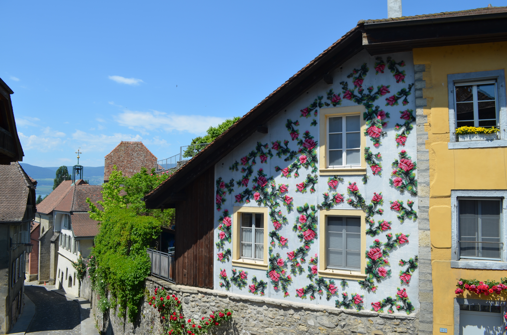
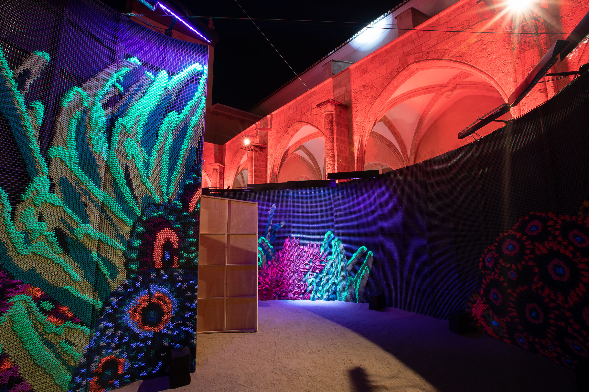
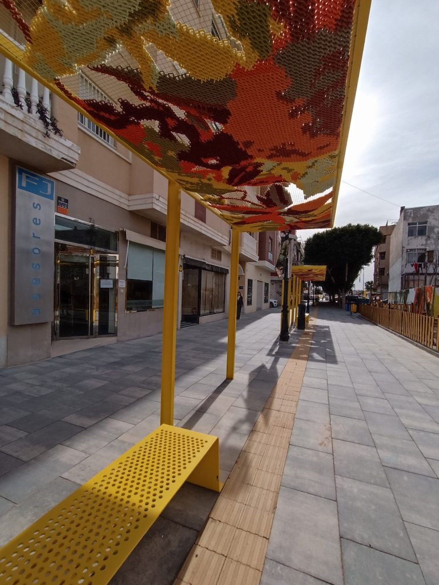
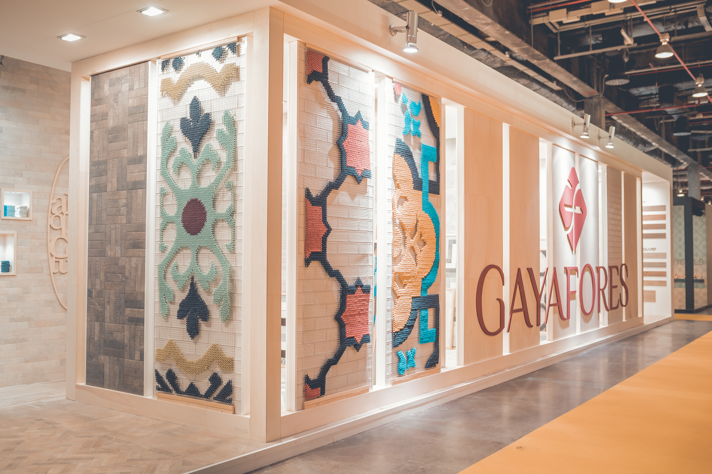
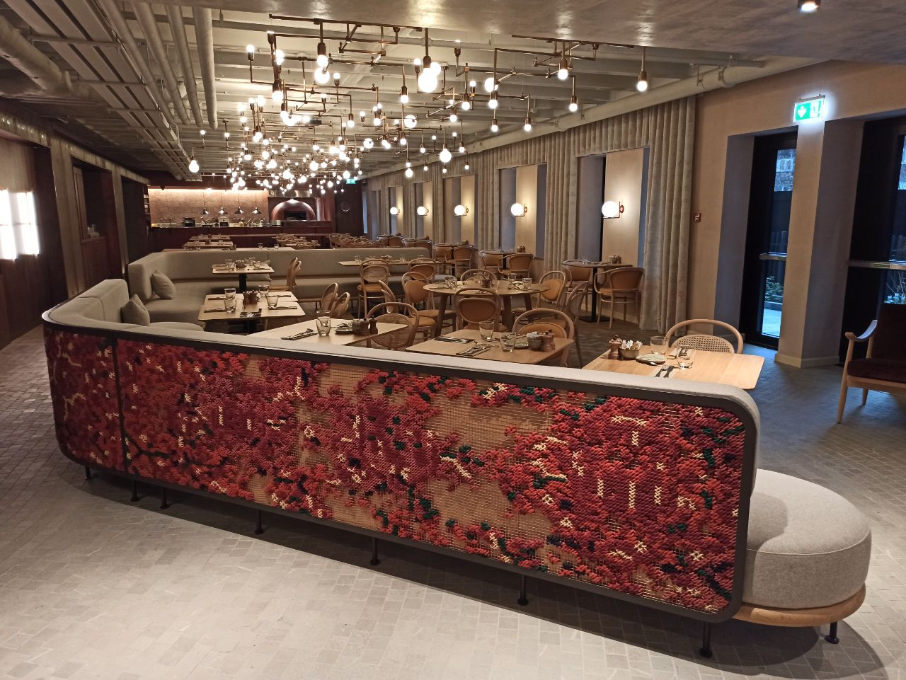
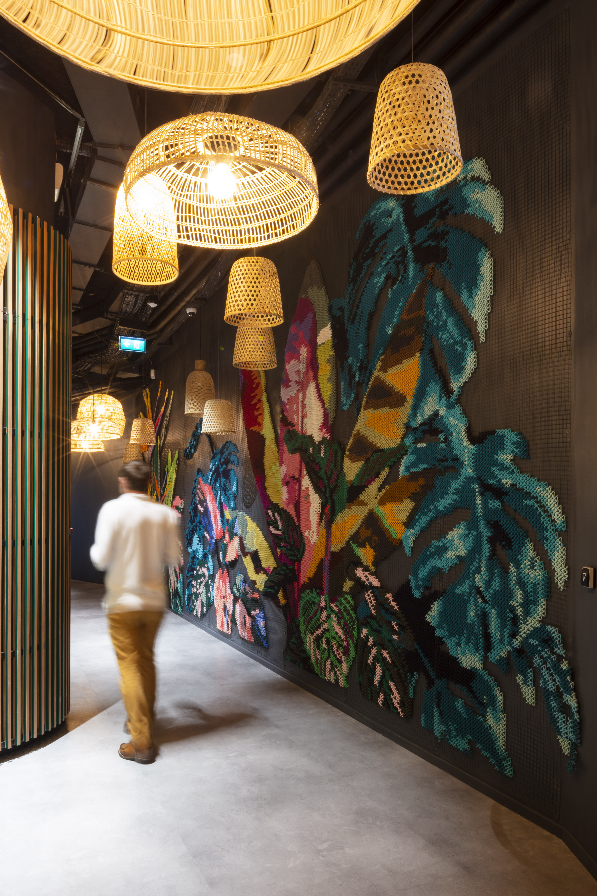
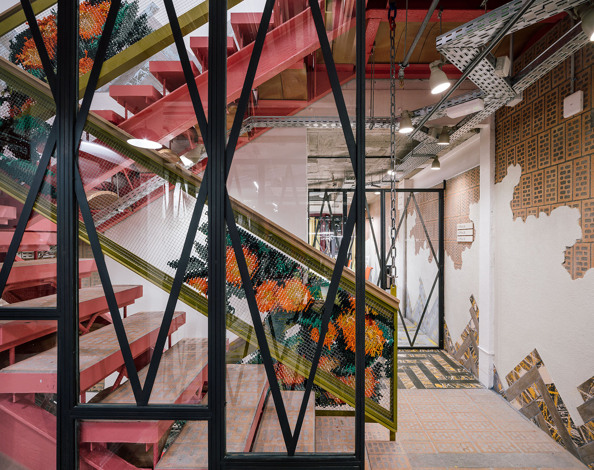

Chicago Botanic Garden
A permanent textile mural weaving botanical motifs with large-scale architectural embroidery across the garden's entrance facade.
View project
Artichoke Festival
The festival invited us to cover an entire building facade with our signature roses — the same blooms that live in our home cushion designs, scaled up to inhabit the walls of a Swiss village.
View projectEfluenow
A 20-metre spiral installation at the cloister of the Centre del Carme — declared in climate emergency. Fluorescent embroidery, black light, white light and sound, evoking the bioluminescent creatures of the deep sea that generate their own light.
View project

Katarsis
A 100m² embroidered shade structure, two shelters and illuminated lampposts — all in autumn leaves. The shade draws leaves on the ground. At night, the lampposts glow through the unstitched gaps.
View project
Audible
Large-format embroidered murals for Audible's campaign in New York and Los Angeles — exploring the relationship between storytelling, texture and public space.
View project
Crear sin prisa
Window displays and street marketing for Alhambra's "Crear sin prisa" campaign — translating the brand's philosophy of slow creativity into textile pieces that invite you to stop and look.
View projectAnartxy
We dressed the facade of this jewellery shop in the heart of Valencia's old town with Valencian modernism made embroidery — orange trees climbing stone walls. It became a reference point in the city.
View project

Gayafores
We embroidered the patterns of their tiles to present colour and form in a completely new way — one you can also touch. Embroidery brings a tactile warmth that gives another dimension to the product.
View project
Hilton Amsterdam
With Amsterdam's architects, we recreated Dutch tulips as embroidered room dividers in the hotel restaurant. Each panel works on both sides — a signature detail of our craft, where every stitch is finished to be seen from anywhere.
View project
Hilton London
Abstract forms embroidered in velvet thread on copper-bathed mesh — like a rug slowly erased by the passage of time. The piece presides over the hotel entrance, where elegance is measured in detail.
View projectDavidson Consulting
Tropical plants embroidered on black metallic mesh painted to match the wall — the mesh itself becomes part of the decoration. A vibrant piece that floods a dark space with colour, designed with the project architect.
View project

Vaqueta Gastro Bar
Embroidered oranges greet you at the entrance of this restaurant opposite the Central Market. Upstairs, we wrapped the columns of the show-cooking room — turning architectural barriers into artistic canvases.
View projectUtopicUs
With architect Izaskun Chinchilla, we embroidered the railings of the entire UtopicUs coworking building with clementines — in tribute to the tree that once lived in the courtyard below.
View project